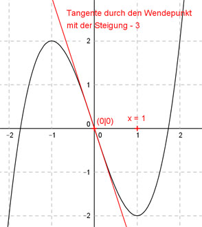

Aufgabe 80 Der Graph einer punktsymmetrischen ganzrationalen Funktion 3. Grades hat im Wendepunkt (0|0) die Steigung -3 und an der Stelle x = 1 einen Extremwert. Wie lautet seine Funktionsgleichung?  Allgemeine Form einer zu (0|0) punktsymmetrischen ganzrationalen Funktion 3. Grades: f(x) = ax3 + cx f’(x) = 3ax2 + c f’’(x) = 6ax 2 Bedingungen: 1. Hat im Wendepunkt (0|0) die Steigung -3 bedeutet: f’(0) = -3 --> 3a * 02 + c = - 3 --> c = -3 2. Hat an der Stelle x = 1 einen Extremwert bedeutet: (c = -3 eingesetzt): f’(1) = 0 --> 3a * 12 - 3 = 0 --> 3a - 3 = 0 |+3 3a = 3 |:3 a = 1 Gesuchte Funktionsgleichung: f(x) = x3 - 3x